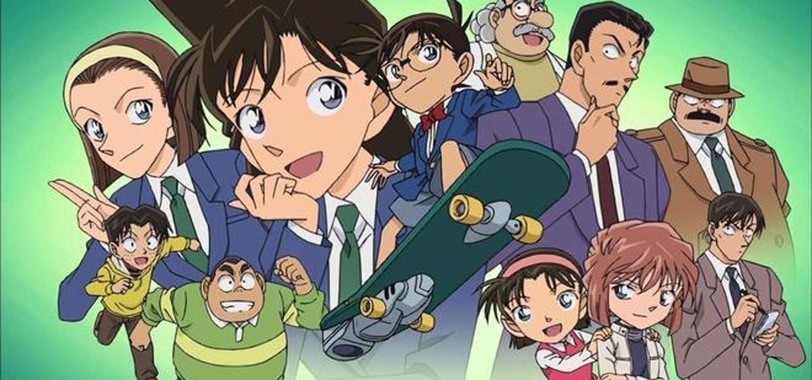

《名侦探柯南》是青山刚昌创作的漫画作品，于1994年1月19日在《周刊少年星期天》1994年5号上开始连载。该作品的日文电子版由《名侦探柯南》官方应用、Sunday Webry发布；简体中文电子版由腾讯动漫、哔哩哔哩漫画、快看漫画发布。单行本在日本由小学馆出版，在中国大陆由长春出版社出版，在中国台湾由青文出版社出版，在中国香港由安乐文潮出版。作品亦有漫画、电视动画片、动画电影等衍生作品，并被5次改编为真人影视剧。
该动漫在故事情节的编排上，不局限于传统的日本推理模式，那些精彩的街头追逐场面，以及稀奇古怪的发明，都有着日版“007”的味道。而在人物造型的设定方面，无论是从长相、衣着、语言来看，都比有着西方化的特征。
什么是意难平？是为了逃离组织而变小的18 岁天才科学家；是全世界找遍美景未有时机的告白；是宿敌的友情，是装死的亲情；是留在游戏里的诺亚方舟；是5-4的零；是为爱牺牲的十年青春；是我喜欢银杏的40年；是高材生一个人的独白；是血淋淋的的双手错过的时机；是小侦探埋在心里的遗憾；是烈火中的月光曲；是变小的救世主……